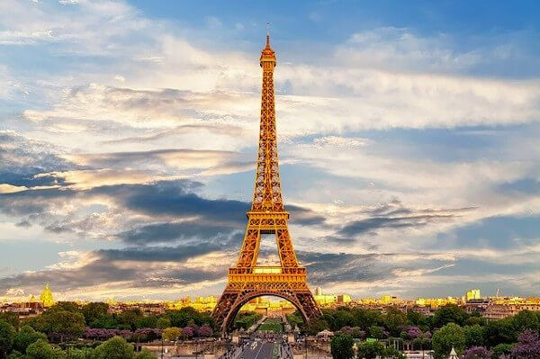
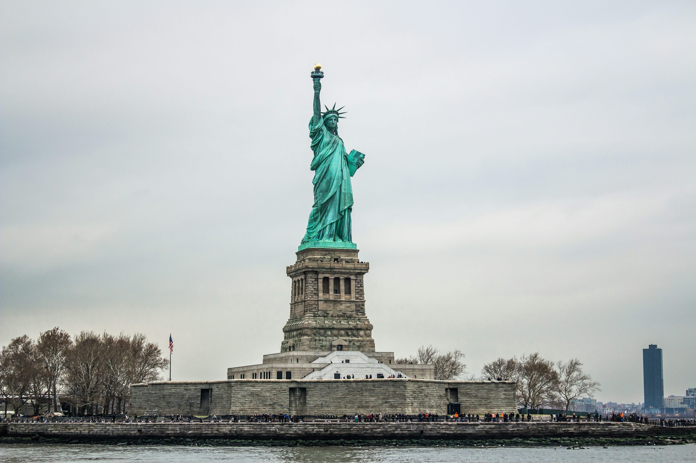
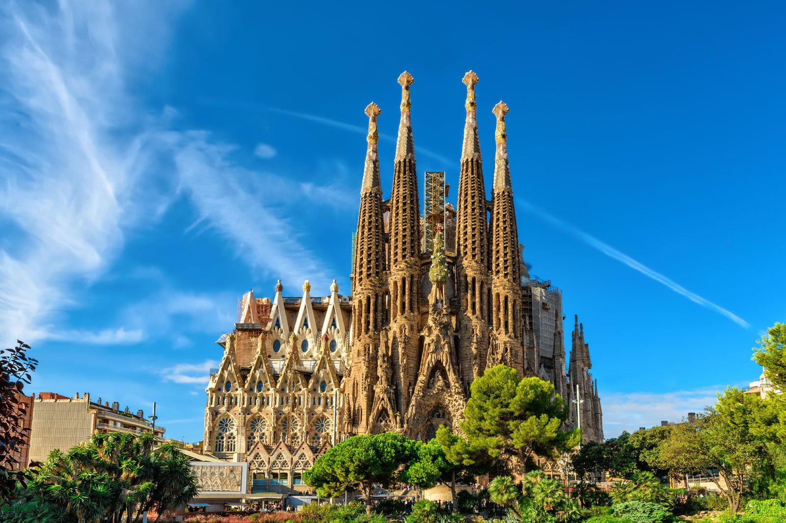

Eiffel Tower – France
The Eiffel Tower is one of the most famous monuments in the world, located in the heart of Paris. Built in 1889 for the World’s Fair, it has become an iconic symbol of French culture.

Statue of Liberty – USA
The Statue of Liberty is a global symbol of freedom and democracy, standing tall on Liberty Island in New York Harbor. It was a gift from France and has welcomed millions of immigrants arriving by sea.

Sagrada Família Barcelona
Sagrada Família in Barcelona, Spain, is an iconic basilica designed by Antoni Gaudí, famous for its intricate facades and towering spires. Construction began in 1882 and continues to this day,

Colosseum – Italy
The Colosseum is an ancient Roman in the center of Rome, famous for contests and public spectacles. It showcases the advanced engineering and architectural skills of the Roman Empire.